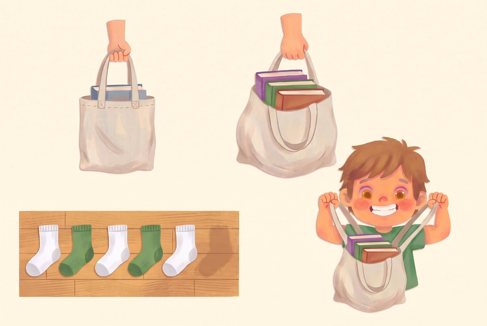
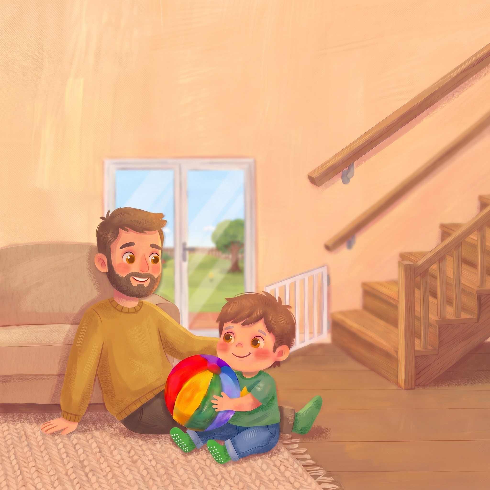

Soy Tomi. Ya sé girar, sentarme, gatear, pararme, caminar, correr y saltar.
Papá abre la rejita de la escalera. Hoy voy a aprender a subirla.
2
3
Mamá suelta a Rula arriba, en el descanso. ¡BONC, BONC, BONC!
Rula baja rebotando, escalón por escalón. La gravedad la tira para abajo… ¿y para subir?
4
5
Ahora subo yo. Me agarro de la baranda y levanto un pie… ¡qué alto es el escalón!
Empujo con la pierna y subo todo mi cuerpo. ¡Uno!
6
7
Mano en la baranda, un pie, el otro pie. ¡Dos!
Mano, pie, pie. ¡Tres! Siempre lo mismo, en el mismo orden: es una secuencia.
8
9
¡Uf! Para subir, mis piernas levantan todo mi cuerpo.
ESFUERZO
Eso cuesta ESFUERZO. Caminar por el piso es más fácil que subir.
10
11
¡Cuatro! ¡Cinco! Mis piernas están cansadas.
Cuanto más alto subo, más esfuerzo hago. ¡Seis! ¡Llegué al descanso!
12
13
Para bajar, me agarro fuerte de la baranda. Bajo despacito, escalón por escalón.
Seis, cinco, cuatro, tres, dos, uno… ¡abajo! Bajar también se hace con cuidado.
14
15
Los gajos de Rula van siempre en el mismo orden: rojo, naranja, amarillo, verde, celeste y violeta.
Y después del violeta, ¿qué viene? ¡El rojo otra vez! Es una secuencia que se repite.
16
17
¿Qué cuesta más esfuerzo: caminar por el piso o subir la escalera?
Mano, pie, pie, mano… ¿qué sigue? ¿Vos qué decís?
?
18
19
Subo otra vez con papá: ¡uno, dos, tres, cuatro, cinco, seis! Ya no me canso tanto.
Hoy aprendí a subir la escalera. ¿Vos sabés cuándo subiste una escalera por primera vez? Rula me espera en el patio… ¿y si ahora la tiro bien lejos?
20
21
Experimento · para hacer con un adulto
¿Qué cuesta más?
Necesitás: una bolsa de tela con manijas, tres libros y medias de dos colores.
Poné un libro en la bolsa. Levantala desde el piso hasta tu rodilla y después hasta tu panza.
Antes de seguir, adiviná: con tres libros, ¿va a costar más o menos?
Poné los tres libros y levantala otra vez hasta las dos alturas.
Anotá cuánto costó cada vez: poquito, más o mucho.
Desafío: con un adulto, armá una fila de medias en el piso: blanca, de color, blanca, de color… ¿Cuál sigue?

Qué levanto
Yo creo que…
Lo que pasó: ¿poquito, más o mucho?
Un libro hasta la rodilla
Un libro hasta la panza
Tres libros hasta la rodilla
Tres libros hasta la panza
En el desafío, seguí la fila de medias hasta que se terminen.
Qué descubrimosLevantar algo más alto cuesta más esfuerzo, y levantar algo más pesado, también. Por eso subir la escalera cansa: en cada escalón levantamos todo nuestro cuerpo. Y una secuencia siempre se repite en el mismo orden.
22
23

Para los grandes
El concepto. Para subir hay que levantar el propio cuerpo contra la gravedad, que siempre tira para abajo: cuanto más alto se sube, y cuanto más pesa lo que se levanta, más esfuerzo hace falta (los físicos lo llaman trabajo). Al bajar, la gravedad ayuda, pero los músculos frenan el cuerpo en cada escalón para que no caiga de golpe: por eso bajar también pide fuerza y cuidado.
Las secuencias. Una secuencia es algo que sigue un orden: contar los escalones del 1 al 6 y al revés, "mano, pie, pie", los colores de Rula. Reconocer un patrón y adivinar qué sigue es una de las primeras bases de la matemática.
El hito. Muchos chicos suben la escalera agarrados a la baranda o de la mano entre los 2 y los 3 años, más o menos: primero apoyan los dos pies en cada escalón y, más adelante, alternan un pie en cada uno. Bajar suele llegar después que subir. Cada chico tiene su ritmo; ante cualquier duda, lo mejor es consultar al pediatra.
Seguridad. Conviene poner rejas arriba y abajo de la escalera hasta que suban y bajen con seguridad, y no dejar juguetes en los escalones. Siempre con un adulto al lado, con buena luz, descalzos o con medias antideslizantes.
Para charlar después de leer: ¿Cuántos escalones hay en tu casa o en la escuela? ¿Los contamos? ¿Qué te cansa más: caminar o subir? ¿Por qué? Inventá una secuencia con aplausos y saltitos: aplauso, aplauso, saltito… ¿qué sigue?